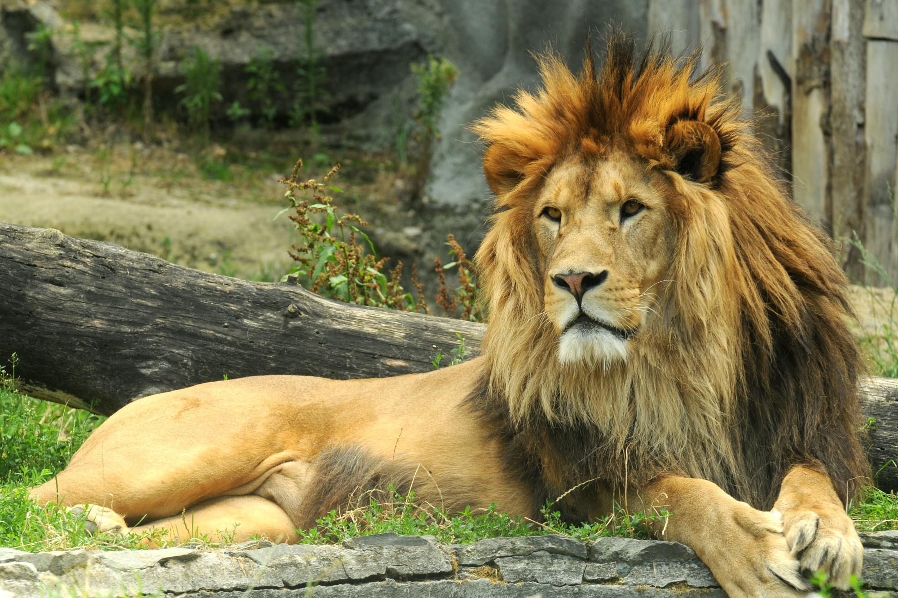

Masožravci
- Masožravec (karnivor) je živočich, jehož potrava se skládá převážně z masa. Vědecký název Carnivore by mohl být zavádějící, protože je podobný názvu řádu šelmy (Carnivora), z nichž většina opravdu splňuje první definici.
- Výjimkou ale je například čeleď medvědovití, jejíž zástupci jsou příkladem šelem, které nejsou pravými masožravci, kromě medvěda ledního.
- Níže je uveden seznam zvířat, které se živí pouze nebo téměř výlučně masitou stravou. Někteří masožravci jsou draví, jiní jsou mrchožrouti.

Ekologický význam
- Z hlediska ekologického jsou masožravci obvykle organismy stojící na vrcholu nebo blízko vrcholu potravní pyramidy – predátoři. Tyto organismy žijí díky potřebě lovu často na rozsáhlých areálech, až stovky km² velkých.
- Jejich populační hustoty jsou i přirozeně nízké, neboť vyšší počet jedinců se na stejné ploše není schopen uživit (na jednotku biomasy kořisti připadá jen malá část biomasy masožravce) a díky tomu mezi ně patří řada nejohroženějších druhů vůbec.
- Člověk byl dříve převážně masožravec.[2] Navíc člověk odedávna viděl v masožravcích svoji konkurenci. Masožravci byli totiž ti, kteří lovili jeho potravu, ať už v podobě domestikovaných zvířat (ovce, kozy…), nebo v podobě vysazované divoké zvěře (srnec, jelen, daněk atd.).
Největší masožravec
- Největším živočichem, který aktivně loví kořist, je vorvaň. Ještě v 19. století dorůstal až okolo 26 m a vážil přes 100 tun (největší kusy ulovené ve 20. století měly maximálně mírně přes 20 metrů a vážily okolo 50 tun).
Více informací o zvířatech naleznete na této stránce.